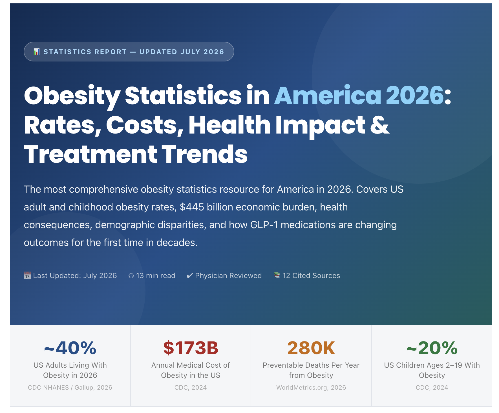

GLP-1s - Culture Shifting Shots!
Read My Vision Statement
This capture shows the cost of obesity itself. I was astounded by the percentage of US Adults living with obesity (40%) and the cost associated with this medical condition ($445 billion).
